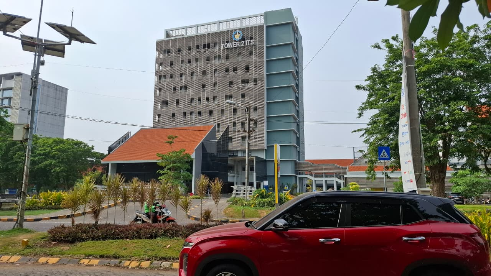

Hasil WebGL (drag = putar, scroll = zoom)
Foto objek asli

Video objek asli
Desain tree hubungan antar objek
Scene (root)
├── Lingkungan
│ ├── Tanah rumput
│ ├── Jalan aspal
│ └── Curb kuning-hitam (2)
├── Gedung Tower 2
│ ├── Fasad abu-abu (tekstur kisi)
│ ├── Rangka atap
│ ├── Menara teal
│ ├── Papan nama
│ └── Gedung rendah: dinding, atap oranye, kaca
├── Mobil merah
│ ├── Bodi, Kabin kaca, 2 lampu depan
│ └── 4 x Roda ──► Ban (berputar)
| └── Headlight = spot light
├── Motor ojol
│ ├── Bodi, 2 x Roda (berputar)
│ └── Pengemudi ──► Badan, Kepala, Helm
├── Pohon (3x): Batang ──► Daun (3 bola, bergoyang)
├── Tanaman median (12x, bergoyang)
├── Rambu Penyeberangan
└── Lampu surya
├── Tiang
├── Panel surya (3, berputar)
└── Bola lampu = point lightPembagian tugas
| Anggota | Bagian |
|---|---|
| [Nama 1] | Gedung Tower 2, tekstur, lighting |
| [Nama 2] | Mobil, motor, pohon, lampu, animasi, kamera |